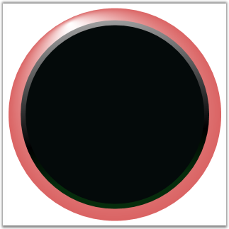

You can set some properties to the gauge to control the frame appearance. Rather than setting properties on the circular gauge individually, you can use resources to define gauge properties for the entire application. Define App.Resources block to specify the style for the circular gauge control and add following markup to it.
|
[XAML]
<Application x:Class="TestApplication.App" xmlns="http://schemas.microsoft.com/winfx/2006/xaml/presentation" xmlns:x="http://schemas.microsoft.com/winfx/2006/xaml" xmlns:syncfusion="http://schemas.syncfusion.com/wpf" StartupUri="Window1.xaml"> <Application.Resources> <Style TargetType="{x:Type syncfusion:CircularGauge}"> <Setter Property="FirstFrameFillColor" Value="Red" /> <Setter Property="SecondFrameFillColor" Value="Green" /> <Setter Property="CenterFrameFillColor" Value="Black" /> </Style> </Application.Resources> </Application> |
The TargetType property specifies that the style applies to all objects of type CircularGauge. Each Setter sets a different property value for the Style. In the application, all circular gauges have a FirstFrameFillColor of Red, SecondFrameFillColor of Green and InnerFrameFillColor of Black.

Figure 19: Circular Gauge with Fill Colors
 Note: Fill colors will be merged on existing color
of the corresponding frame. If you want to override the existing color
completely, use corresponding frame style property and set ApplyFrameStyles =
"True".
Note: Fill colors will be merged on existing color
of the corresponding frame. If you want to override the existing color
completely, use corresponding frame style property and set ApplyFrameStyles =
"True".
See Also
Built-in Frames, Custom Styles and Templates
 Built-in Frames
Built-in Frames